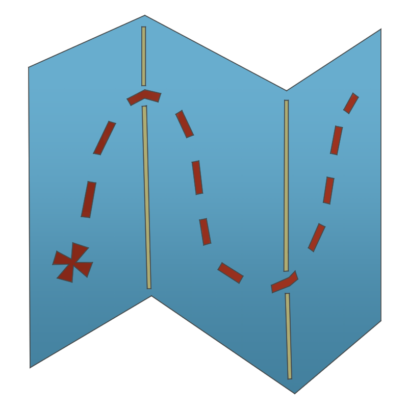
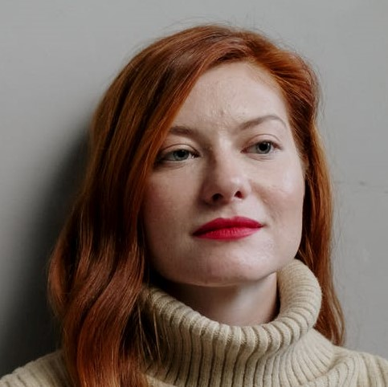

Expert in all things strange and stranger.
Is very tired of hearing the words 'Now I don't have any proof, but I know what I saw!'
Elias Bouchard is the current head (but would like to think of himself also as the heart, and eyes) of the Magnus Institute. Since assuming this position in 1996, he has had the honor to behold and cooporate with the brilliant staff of the institute, and he is grateful to them for the many eye-opening opportunities.
Bouchard is an acclaimed pupil of Christ Church (Oxford). During his studies, he has had many glimpses into the Institute's vision regarding the research of folklore in the United Kingdom, and he knew this was the place he was destined to be.
Despite how much he enjoys performing the administrative duties of his role and keeping an eye out to ensure that every plan runs smoothly, Bouchard also favours spending his spare time in reading (especially of books that can expand his outlook), scouting for wild flowers such as irises and daisies, and people-watching.
If you wish to contact him or to schedule an appointment, please write to Rosie, his assistant, at N_R@themagnusinstitute.org.
| Rosie Zampano | Nora Raymond |
|---|---|
| Head Secretary, Webmistress.
Mr. Bouchard likes his coffee lukewarm. It's a latte without espresso, which is just water with cream on top, and it's weird, but I get it. |
Administrative Assistant.
If you ask, I can probably take care of it. Should I take care of it is not my job to question. |
| John Blake | Leopold Murray |
|---|---|
| Head Accountant.
Show me the money! |
Payroll and Benefits Administrator.
He can't make payday come any faster, but ask him about his fishing skills! |
| Sharon Johnson | Linda Randall |
|---|---|
| Chief of Staff.
Please, keep sending in applications, we're constantly in need. |
Member and Visitor Services Coordinator.
We don't actually allow people in off the street, please call ahead with your credentials if you are interested in our library or archives. |
| Marguerite Kenner | Michelle Williams |
|---|---|
| Legal Expert.
Exceptionally proud of her sourdough starter. |
Legal Assistant.
Legally there is nothing I can actually say. |
| Stephen Jones | Mark Lewis |
|---|---|
| IT Systems Administrator.
I can see all your top scores on Minesweeper. Not even close. |
Help Desk Technician.
The Internet is not trying to give you free money. Please stop opening the emails. |
| Diana Cohen | Georgina Roe | Pamela Shaw |
|---|---|---|
| Head Librarian.
I know exactly what book you are looking for and maybe I will let you see it. |
Acquisitions Librarian.
Somehow there are always more weird books to be found. |
Reference Librarian.
Is it Shakespeare? It's probably Shakespeare. |
| Paul Sims | Tom Rawlins | Matthew Collins | Annie Nixon |
|---|---|---|---|
| Curator of Rare Books, Head of Special Collections.
Definitely a better person than Jurgen Leitner. |
Special Collections Registrar.
World's leading expert in rocks. |
Assistant Curator.
Most books don't bite... |
Collections and Exhibitions Technician.
No relation. |
| Ciaran Roberts | Imogen Harris | Mark Coulson |
|---|---|---|
| Rare Materials Catalog Librarian.
Please for the love of god, stop touching these very rare documents with your bare hands! |
Old Materials Catalog Librarian.
Are there plesiosaurs in the Institute library? Maybe! |
Cataloging Assistant.
A book never killed anyone. Twice. |
|
|
| David Smith | Deborah Taylor |
|---|---|
| Head of Research.
Expert in all things strange and stranger. |
Statement Veracity Coordinator.
Is very tired of hearing the words 'Now I don't have any proof, but I know what I saw!' |
|
|
|
|
| Andrew Wood | Michaelus Alter | Ivan Boots | Laura Evans |
|---|---|---|---|
| PER Team Coordinator.
The original team player (read: coordinator.) |
PER Historian.
A perfectly normal name. |
PER Equipment Specialist.
Most of the garbage on TV isn't real, but some of the stuff we use here is remarkably close. |
Paranormal Field Researcher.
Spooky is her line of work. |
|
|
|
| Mike McMahon | Timothy Blake | Henry Jones |
|---|---|---|
| Historical Research Coordinator.
We have top men working on it... Top men... |
Architectural Historian.
No, I do not know why London Bridge is falling down. Stop asking. |
Archaeologist.
His service dog is not called Indiana but he is a very good boy. |
|
|
|
| Matilda Miller | Margaret Brown | Vincent Malloy |
|---|---|---|
| Historical Maps Analyst.
Yes, this is absolutely what that area looks like; yes, it is different from the survey only a couple years older; no, I cannot explain why that would be. |
Genealogist Researcher.
The world is actually a bit smaller than you think. |
Historical Research Assistant.
He's always polite and does what he's told. |
|  | |
| Jane Walker | Gary Liberman |
|---|---|
| Locations Research Coordinator.
I mostly just book lodgings and make schedules for everyone else. |
Foreign Locations Referent.
Emails asking if I can book a holiday to Alicante will be treated as a breach of company policy. |
|
|
|
| Asif Aziz | Mikhail Belinsky | Ian Evans |
|---|---|---|
| Anthropologist.
No, it's not the study of bones. Well, it can be... but it's not. |
Maps Analyst.
I've been to the edge of the map... here be monsters. |
Field Researcher.
I don't actually research fields. Stop sending me holiday pictures of fields. |
|
|
|
| Christopher Thomas | Susan Hughes | Smyra Bilal |
|---|---|---|
| O&A Team Coordinator.
42. Hans shot first. Acme disappearing re-appearing ink. 2nd shooter on the grassy knoll. Stop asking |
Documentation Authentication Specialist.
Elias sends me your forged doctor's notes once a month. You loop the y! It's a dead giveaway! |
Art Authentication Specialist.
No I haven't been on Antiques Roadshow. |
|
|
| Julian Doherty | Sharon White |
|---|---|
| Authentication Assistant.
IT'S REAL! |
Authentication Assistant.
I checked. |
|
|
|
|
| James Thompson | Joshua Baumgartner | Morgan York | Alice Travelion |
|---|---|---|---|
| Conservation Team Coordinator.
Why are we trying to save this creepy stuff? |
Art Conservator.
Is it reversible? It should be. |
Book Conservator.
Prefers to work on books in languages they can't read. |
Paper Conservator.
Absolutely we should save trees, but she will fix these papers in the meantime! |
|  | ||
| Sonja Soelberg | Paula Salkeld | Antonio Harrison |
|---|---|---|
| Head of Artefact Storage.
Danger is my first, last, and middle name. |
Artefact Curator.
Put that thing back where it came from ... or so help me... |
Artefact Preservation Specialist.
'Do not touch' is a rule, not a guideline. |
| Simon Harris | Helen Gould |
|---|---|
| Hazardous Books Referent.
Sometimes you can, and should, judge books by their covers. |
Hazardous Art & Documents Referent.
The 'best Rusty Quiller', whatever that means. |
| Julie Lewis | Michael O'Donnell | Zachary Tyler | Francis Davison |
|---|---|---|---|
| Artefact Testing Coordinator.
Please stop suggesting strange things to try, we have enough... |
Storage Assistant.
Another one?! |
Storage Assistant.
Not entirely sure what he's doing here. |
Storage Assistant.
The one, the only... also the only one who knows what they're doing. |
| Gertrude Robinson | Emma Harvey | Michael Shelley | Sarah Carpenter |
|---|---|---|---|
| Head Archivist.
At the head of the Institute’s Archives for over 30 years. Resident cardigan enthusiast. |
Archival Assistant.
Wanted to be a mad scientist when she was little, but could never get the hair quite right. This was the next best thing! |
Archival Assistant, Unofficial Office Clown.
Likes: gaudy shirts, haircare, digital image manipulation, his personal computer. Dislikes: Mondays. |
Archival Assistant (graduate).
Studied maths for the fractals. Can usually be found in abandoned buildings, taking photographs, or looking at the stars. |
| Richard Martin | Terrance Bumble | Steven Violich | Martin Corcoran |
|---|---|---|---|
| Head of Facilities & Security.
All of my funny anecdotes would get anywhere else investigated. |
Building Caretaker.
There must be a way to take one of life's few remaining pleasures out of your daily routine! |
Building Custodian.
I'm gonna get a bottle of Head & Shoulders, 'cause I found one on the road the other day. |
Building Custodian.
We do pick up odd roadkill, don't we? But a man's got to eat. |